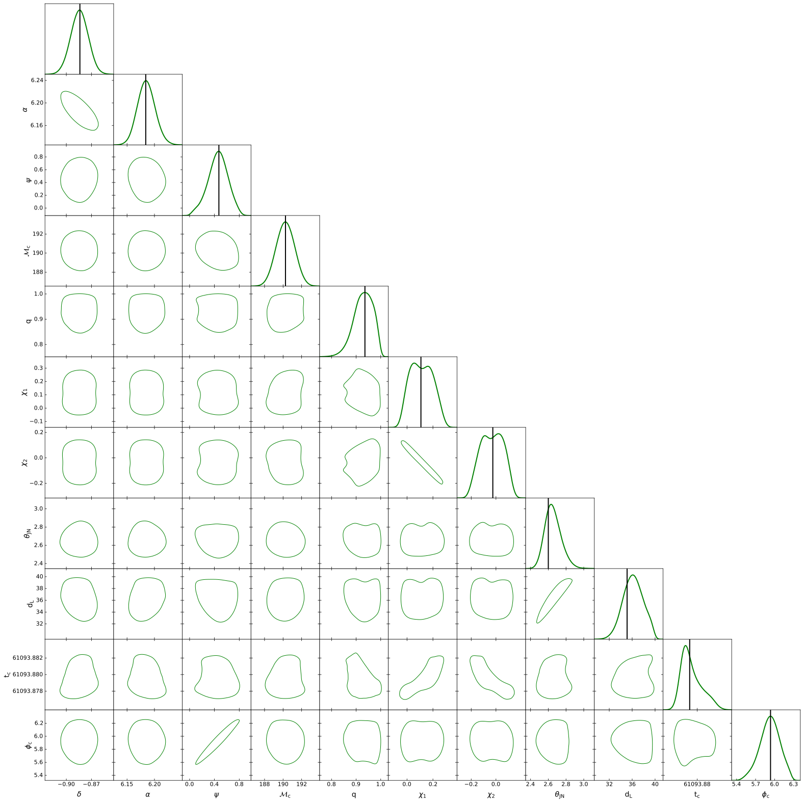

Likelihood sampling tutorial
In section DALI tensors tutorial we have discussed how to calculate the DALI tensors and their Taylor form.
In this section, assuming we have already performed such calculations we will discuss how
to sample the DALI likelihood in the Python part of the framework.
Taylor_DeltaPs Function
The DALI likelihood depends on the DALI tensors and their contraction
with \(\Delta \theta^i\). The latter is calculated with the function Taylor_DeltaPs.
This function takes as input \(\Delta \theta^i\), in the form of a numpy
array, and an integer N and returns the powers
\(\{\Delta \theta^{i_1 i_2}, \dots ,\Delta \theta^{i_1 ... i_{2 N}} \}\):
import symdali
import numpy as np
# Delta theta array
delta_theta = np.array([0.1, 0.2, 0.3, 0.4, 0.5])
# Calculate up to the power theta^6:
N = 3
delta_ps = symdali.Taylor_DeltaPs(delta_theta, N)
If we look at the output delta_ps we will see that it is a 1D numpy array
print(len(delta_ps))
>> 456
The number of elements is the sum 456 == 15 + 35 + 70 +126+210, the number of LI components
of totally symmetric tensors of ranks (2,3,4,5,6) in 5 dimensions. The function
Taylor_DeltaPs gives a representation of
where the different powers of \(\Delta \theta^i\) are represented by their LI components.
Once we have the powers of \(\Delta \theta^i\) and the Taylor form of the DALI
tensors obtained in Example we can implement the DALI likelihood by taking the dot product
of these vectors. For instance, given the form of DALI tensors saved in Example
we have
#the fiducial point around which we expanded likelihood
pf = np.array([
-0.883787, 6.18412, 0.471846, 190.258, 0.935815, 0.107562,
-0.0254365, 2.60021, 35.1128, 61093.87906420612, 5.93578
])
#Change dL -> 1/dL
pf2 = pf.copy()
pf2[8] = 1/pf[8]
tensors = np.loadtxt('taylor.txt')
def DALI_L(p):
#Change dL -> 1/dL
i_p = p.copy()
i_p[8] = 1 / p[8]
Delta_theta = i_p - pf2
log_L = np.dot(
symdali.Taylor_DeltaPs(Delta_theta, 3),
tensors
)
return log_L
Here we make two important observations: as we saw in Fisher tutorial the derivatives are calculated in \(1/d_L\), whereas we want to sample the likelihood in \(d_L\), so we perform a coordinate change inside the function. Also, it is necessary to pass the vector p in the same order of the variable derivatives calculated in DALI tensors tutorial that is:
The function DALI_L(p) already implements the DALI likelihood and can be used to
perform the sampling, which can be done with any algorithm. In practice we advise the use
of emcee because it is lightweight. In the following we describe our way of using it.
Sampling
The priors in GWs can be defined in very different scales we find it useful to
transform the sampling problem to a cube. We choose the cube length to be 200, so that
the step size of emcee, a=1, is small with respect to the cube’s length
scale. In order to perform such a change we need two functions to convert variables from
the cube to the actual prior ranges and vice versa. Assume that a and b have the
boundaries of the waveform variables:
a = np.array([
-np.pi/2, 0., 0., # dec, phi, psi
140, 0.125, -0.99, -0.99, # Mc, q, s1z, s2z
0., 1, 61094.012-0.2, 0 # iota, dL, tc, phi_ref
])
b = np.array([
np.pi/2, 2*np.pi, np.pi, # dec, phi, psi
240., 1., 0.99, 0.99, # Mc, q, s1z, s2z
np.pi, 40., 61094.012 + 0.2, 2*np.pi # iota, dL, tc, phi_ref
])
We define functions to take a variable \(x \in \left[a, \, b \right]\) to \(y \in \left[0, 200 \right]\) and to take the variable \(y\) back to \(x\):
#Define transformations to the cube and from it:
cube_length=200
inv_scale = cube_length / (b - a)
scale = (b - a) / cube_length
def from_cube(y):
return y * scale + a
def to_cube(x):
return (x - a) * inv_scale
Now we define the likelihood that takes the cube variables:
def emcee_logP(y):
if y.min() < 0 or y.max() > 200:
return -np.inf
return DALI_L(from_cube(y))
Finally, we just proceed to likelihood sampling:
#Here we set the walkers and initial steps
p0 = np.random.uniform(0, 200, size=(100, 11))
nwalkers, ndim = p0.shape
#RUN EMCEE
import emcee
sampler = emcee.EnsembleSampler(nwalkers, ndim, emcee_logP, a=1)
sampler.run_mcmc(p0, int(5e5), progress=False);
#Calculate the auto correlation time
tau = sampler.get_autocorr_time()
# the emcee recomendation is to discard 2xtau and thin the chain by tau/2
flat_samples = sampler.get_chain(
discard=int(2*tau.max()),
thin=int(tau.max()/2),
flat=True
)
#The samples are in the cube variables y in (0,200)
# Here we transform them back to the original intervals
flat_samples = from_cube(flat_samples)
Finally, we look at the corner plot of the result:
import getdist
from getdist import plots
#observe that for the injection value of t_c the right ascension and azimuthal angle
#are equivalent
labels = [
'dec', 'ra', 'psi',
'chirp_mass', 'mass_ratio','chi_1', 'chi_2',
'theta_jn', 'luminosity_distance', 'geocent_time', 'phase'
]
latex_labels = [
r'\delta', r'\alpha', r'\psi',
r'\mathcal{M}_c', 'q', r'\chi_1', r'\chi_2',
r'\theta_{JN}', r'd_L', r't_c', r'\phi_c'
]
samples = getdist.MCSamples(
samples=flat_samples,
names = labels,
labels = latex_labels,
label='Triplet'
)
samples.smooth_scale_1D = 0.3
samples.contours = [0.9]
g = plots.get_subplot_plotter(scaling=False)
g.settings.figure_legend_frame = False
g.settings.legend_fontsize = 50
g.triangle_plot(
[samples],
filled=False,
contour_colors=['g'],
line_args = [
{'lw':2, 'color':'g'}
],
legend_loc='upper right',
marker_args={'lw': 2,'color':'r', "alpha":1},
)
leg = g.fig.legends[0]
for line in leg.get_lines():
line.set_linewidth(5)
# add truth only to 1D panels (diagonal)
pf = dict(zip(labels, pf))
truth = pf
for i, p in enumerate(list(pf.keys())):
ax = g.subplots[i, i] # diagonal axis
ax.axvline(truth[p], color='k', lw=2)
fig = g.fig
plt.savefig('example.pdf', dpi=300, bbox_inches='tight')


As shown in Figure 5 in 2609.38399 this example has good agreement with the result of the exact likelihood, which takes around 69 hours to run.
Here,
we have a Wolfram Language, Python and Bash scripts that
demonstrate the complete workflow, from the DALI tensors to the final plot with a
single terminal command. On a Macbook Air M1 with 8 Gb of RAM this example takes 12.3 minutes to run.